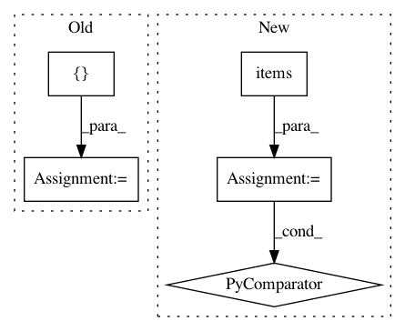

a41f2ff4c1437f0b61e76265c31bdec71be0556f,softlearning/algorithms/sql.py,SQL,get_diagnostics,#SQL#Any#Any#Any#Any#,386
Before Change
feeds = self._get_feed_dict(batch)
Q_values, Q_losses = self._session.run(
[self._Q_values, self._Q_losses], feeds)
diagnostics = OrderedDict({
"Q-avg": np.mean(Q_values),
"Q-std": np.std(Q_values),
After Change
diagnostics.update(OrderedDict([
(f"policy/{key}", value)
for key, value in
self._policy.get_diagnostics(batch["observations"]).items()
]))
if self._plotter:
self._plotter.draw()
In pattern: SUPERPATTERN
Frequency: 3
Non-data size: 5
Instances
Project Name: rail-berkeley/softlearning
Commit Name: a41f2ff4c1437f0b61e76265c31bdec71be0556f
Time: 2019-04-26
Author: hartikainen@berkeley.edu
File Name: softlearning/algorithms/sql.py
Class Name: SQL
Method Name: get_diagnostics
Project Name: rail-berkeley/softlearning
Commit Name: abb4e425ff57acad92d42e92a6c76526a3b49e27
Time: 2019-02-04
Author: hartikainen@berkeley.edu
File Name: softlearning/samplers/simple_sampler.py
Class Name: SimpleSampler
Method Name: sample
Project Name: rail-berkeley/softlearning
Commit Name: 7c2c17d21c8b508cbf30cab8cede95ea64b5749e
Time: 2018-10-18
Author: hartikainen@berkeley.edu
File Name: softlearning/replay_pools/simple_replay_pool.py
Class Name: SimpleReplayPool
Method Name: __init__